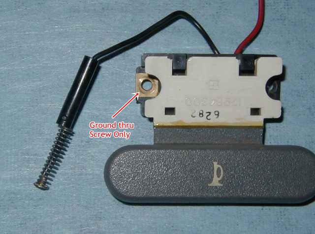
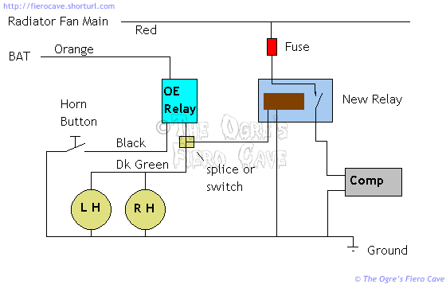

Go Home
Site Map
Go Home
Site Map
Tooting My Own Horn
Ok... No more horn jokes...
Horn Paddle Repairs:
Does your Fiero have the "paddle buttons" steering wheel found in many SE, GT, and Sport Coupes? Are yours broken? Do you still have all the pieces? If you do then there is a RELIABLE way to fix them!
When the buttons break, they seldom do so cleanly. This is actually a good thing! A "dirty" break allows nearly perfect realignment of the parts, and since the white part usually breaks a little inside the gray paddle, it's possible to get a totally invisible repair that lines up so well you'll never know they were broken. Better yet, the repaired paddles are stronger than original.
To start, head to your local auto parts dealer, or Kmart, and locate some "plastic welder", Devcon, and others, market it. This stuff is a 2-part Epoxy type adhesive. DO NOT waste your time with any one-part adhesives, and NEVER use "super glue" on plastic. Neither will last in this application, nor will they reinforce the paddle. (So called "super glue" hardly ever works well on plastic.)
Warning: This adhesive is Very fast setting. You will have only about 90 seconds of working time before the stuff is too thick to use. Use it out doors! It stinks horridly! Sniffing this won't make you high. It will make you sick or dead.
Take the switches off the steering wheel, and make sure the parts are free of obvious dirt. (The adhesive is a combination Solvent welder/Epoxy. As long as the parts are clean the adhesive will bind to it.) Dispense, and mix, the adhesive on a disposable item, like cardboard. Apply the mixed compound with a small wire, or tooth pick, to the edge of the white part, and inside the paddle. Press the pieces together, and hold still until the adhesive sets. ((If the break is deep enough into the paddle then it will pretty much hold itself straight.))
To reinforce the paddle, apply some adhesive to the back of the paddle joint. You can be fairly liberal. You can even glue a bit of something across the back of the gray/white joint to reinforce it. If you apply it to the front of the buttons stay well inboard of the thick paddle end or your repair may show. In fact, if your paddle buttons haven't broken yet, you could reinforce them to keep them in one piece through all but the most severe beating.
NOTE: This steering wheel is used in other GM/Pontiac cars. The only difference is the center cover. Check your local salvage yards for Grand-Am, 6000, Cavalier, and others, should you need new paddles or if your wheel is badly torn up. There are both Leather and soft plastic rimmed versions of this wheel.
Why do so many paddle buttons break?
The button is a two step molded part. The white part is cast then the colored part is cast onto it. The colored plastic doesn't fully bond to the white plastic. The result is a thin spot along the edge of the colored section. So far all the ones I've seen broken all cracked from or along that line.
Button Repair Update
Warning! Don't try this in the car! The purple cleaner stains really bad. The glue isn't much nicer.
One of the buttons I repaired with the plastic welder epoxy ended up broken again. I was able to scrap the epoxy off the white part pretty easy. It stuck a little better to the colored part but not much.
If you use the epoxy, you've got to get the plastic really clean, even then I'm not sure if it will bond any better.
I wanted something fairly strong to clean the parts. Since it was handy, I tried the purple cleaner for PVC pipe. I figured it would at least degrease the plastic. (When cleaning, hold the broken edge down or the cleaner will run where you don't want it.) To my pleasant surprise, the cleaner worked on the horn button plastic just like it does on pipe. It cleaned the plastic and slightly softened it.
So for giggles I tried the pipe cement instead of the epoxy this time. You've got to be careful with the glue just like you were with the cleaner. It will permanently scar any button plastic it gets on.... I put a little glue along each side of the break and held the parts together.
You'll have to hold the parts considerably longer than with the epoxy. Once they start to set leave them alone and let them cure at least overnight.
So far the result seems more promising than with the epoxy. I didn't even bother to reinforce it with anything. The pipe glue bonds the white and the colored plastics so the joint is now the same thickness as the rest of the thing.
Button Grounding
(This may apply to other horn buttons besides the paddle style ones.)
If one button or the other won't work, you might have a ground problem and not a bad button. The paddle buttons are grounded only thru the mounting screws. In many cars, the screws have an anti rust coating. This coating is known to keep the screws from making good electrical connection. If you have hard to find horn problems, check these screws. Either replace them with bare ones, or scrape the coating from the bottom of the head and along the threads. You don't have to get them completely bare.

Source: Jazzman with note by Ogre.
Fixing OE Horns.
Like many people, I had to fix my stupid meep meep horns recently. Here are a few handy notes.
If the factory radio is working, the fuse is ok. If you have an aftermarket radio, check the 25-amp BAT fuse.
If the horns don't sound the first thing to check is the relay in the convenience center on the passenger's side. If the relay is clicking, the horn button is working. If the relay isn't clicking try another one. If it still won't click then the wiring has problems, most likely in the steering column.
A relay that clicks isn't automatically good. It could still have a cruddy contact inside. If you don't have a spare relay, you can take the cover off to check the contacts. You can also plug in the uncovered relay and short the contacts to check the horns. (That's handy if the horn button may be acting up. Expect a hefty spark when you do that.)
The odds are really good both horns are shot. I had one dead for a long time. The other recently started sounding only when it felt like it. (BTW, Yes, the horns can be dead and still pull power. This happens when the contact in them welds itself closed.)
The horns are under the car. On mine they are mounted in front of each wheel well and were pretty easy to get at. I did jack the car a little for more room to work but I didn't have to crawl under it any.
So I yanked the trashed ones out and replaced them with some aftermarket ones I had used on another car before I scrapped it. They sound nice on my Fiero. They are loud but sort of mellow sounding instead of really shrill like most air horns.
I mounted them in the same location as the OE horns. Better yet, you can reuse the OE horn brackets. If you can't unscrew the bolt that holds the horn on the bracket, simply drill or grind off the head. This gives you a much better fit than the little tin strips that come with most aftermarket horns.
Don't forget to coat the horn terminal with dielectric to prevent corrosion.
Mount them so the trumpet points mostly down. This will help keep them from collecting crap. In the OE location it will also direct the sound out of the car body.
Intermittent failures
Once you've checked all the stuff above, you'll have to check the horn button and the turn signal cam under the steering wheel.
The button(s) can usually be checked and fixed without removing the steering wheel. Depending on which type is involved, you may be able to clean them out with contact or brake parts cleaner. (The Paddle buttons are easy to clean but others can be nearly impossible.)
To disconnect the button wire from the column, push in the sleeve, twist it a little CCW, and it comes right out.
Problem with the turn signal cam will require you to remove the steering wheel and lock plate. Notes for that are in the steering gear article.
The OE grease can gum up and prevent the slip ring on the signal cam from making good contact with the brush. If the signal cam is good, clean it off with contact or brake parts cleaner. Spray the spring-loaded brush with some WD40 or other spray oil, and give the slip ring just enough to dampen it. Work the contact after you spray it to make sure it's sliding freely in its hole.
If needed, you can get a new signal cam ring thru MotorMite's carded red HELP! product line. The signal cam comes with the brass ring for the horn on it.
Test Tool
Ok, You know the horns are good but you've got to fix a wiring problem and you don't want the neighbors shooting at you... You need a way to simulate the load of the horn without making noise.
Find yourself a spare sealed beam headlight and connect it between the horn connector and ground. Almost any lamp will do. Two terminal high beam lamps are easiest to use. If you have a three terminal lamp, hold the thing so the terminals look like this-> |_|. The terminal on the right is ground, bottom is low beam, and left is high beam. For this you could even use a dual beam lamp that has one filament burned out.
Why to most car have two horn?
Two horn are two Note. Two note made most sound that 1 note.
Horns can be used singly, but are often arranged in pairs to produce a chord consisting of two notes, sounded together; although this only increases the sound output by 3 decibels, the use of two differing frequencies with their beat frequencies and missing fundamental is more perceptible than the use of two horns of identical frequency, particularly in an environment with a high ambient noise level. Typical frequencies of a pair of horns of this design are 500 and 405-420 Hz (approximately B4 and G#4).
Source: wiki Horn_(acoustic)
For that reason, when you take use horn from car then treat them like match pare. You'll get better horn.
But '88 has only one horn....
So? Wire the second horn. Problem solved.
Upgrade?
You can buy a new horns of course. Hella and Fiamm makes OE Horns for EU cars. Fiamm makes cheap replacement horns sold thru many stores but get OE horns at a junk yard. Treat horns as a set for best results. Avoid horns from two cars/makers. Try salvage yards and check BMW etc. (Also try using Search in PFF. Search terms like Horn hella in Archives.)
Air Horns
I've used these on other cars. A bunch of people put them on Fiero, so I'm putting in some notes for them too. I don't recommend them as the only horn on the car. They have a nasty habit of splitting a diaphragm, which kills the whole set. You'll know then that happens because they will go from nice and loud to sounding like an asthmatic pig trying to squeal.
These can also piss off cops and state DMV inspectors. If these are your only horn just pulse them quick during inspection. It's better to have the guy ask you to hit the horn again than blow him off his feet. (This is true of any really loud horn.)
Most air horns want to be used in short bursts. They'll tell you that right in the instructions. Long burst can do weird things with the sound and may accelerate wear on them.
If I do another set of these, I'd pickup the horn feed line somewhere and install a selector switch. This way if the air horns break or I'm going to inspection, I can switch back to the electric horns. Use a heavy-duty switch. Try to put it someplace where water isn't running on it.
If you don't want a switch, unplug the connectors on the horns and pack them with dielectric to keep them from corroding. Coat the terminals on the horns as well.
If the OE horns are dead find some used ones in a salvage yard. This will give you cheep backups when you need them.
You should still use the relay that comes with the air horn kit. To power the air horns, you could use the main power feed for the radiator fan. If you use the fan power you need to install a fuse in the horn wire. This circuit would let you put all the wiring in the front compartments.
Use some fairly heavy wire for the compressor power feeds. 12-14awg. The compressor draws a pretty good amount of juice.
There aren't a whole lot of mounting choices but keep in mind that the horns will work better if the compressor breathes cool air. Also plan for things to eventually break down. You'll want easy access to the whole mess.
You also want to keep the airlines as short as possible. Long lines will take time to pressurize and could make the horns very lazy. (They will always lag the horn button a little.)
The compressor will last longer if you can keep it clean and dry.
Wiring
Here's a common way to wire air or other high current horns. If you don't want to install a switch at the indicated spot then just reach under the front and unplug the OE horns. If you go that route, pack the OE terminals with dielectric so they don't rot. You may need them in future.
You could also use this diagram to wire electronic musical horns. Most of those you can feed directly from the OE relay.
